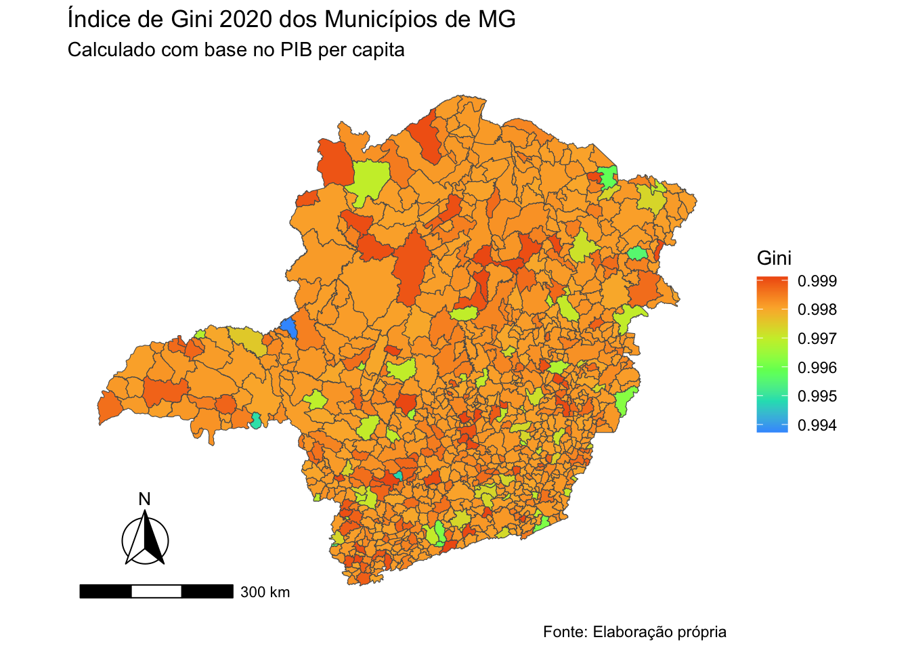

# Lista de pacotes necessários
pacotes <- c("sidrar", "ineq", "tidyverse",'ggspatial',
"ggplot2", "plotly", 'geobr', 'gt')
# Verifica se os pacotes estão instalados e instala se necessário
install.packages(setdiff(x = pacotes,
y = rownames(installed.packages())))
# Carrega os pacotes
lapply(X = pacotes,
FUN = library,
character.only = TRUE)2 Índice de Gini
Compartilhando Código em R
Resumo
Este tutorial aborda o cálculo e visualização do Índice de Gini, uma medida estatística amplamente utilizada para avaliar a desigualdade na distribuição de renda em populações ou regiões. O Índice de Gini varia de 0 (igualdade perfeita) a 1 (desigualdade máxima) e é essencial para economistas, pesquisadores e formuladores de políticas públicas compreenderem a desigualdade socioeconômica.
Contato: transformacao.digital@fjp.mg.gov.br
3 Medidas de Desigualdade
O Índice de Gini é uma medida estatística amplamente utilizada para avaliar a desigualdade na distribuição de renda em uma população ou país. Ele fornece uma medida numérica que varia de 0 a 1, onde 0 representa igualdade perfeita (ou seja, todas as pessoas possuem a mesma renda) e 1 representa desigualdade máxima (ou seja, uma única pessoa detém toda a renda, enquanto as demais não possuem nenhuma) (Hoffmann 2006).
Ao calcular o Índice de Gini, é possível obter uma compreensão clara do quão desigual é a distribuição de renda em uma sociedade. Ele é frequentemente usado por economistas, pesquisadores e formuladores de políticas públicas para medir e comparar a desigualdade em diferentes regiões e ao longo do tempo. Com base nessa medida, é possível identificar áreas de alta desigualdade e direcionar esforços para promover políticas sociais e econômicas mais igualitárias.
Aqui estão alguns exemplos de problemas de pesquisa que podem ser analisados usando esse índice:
- Desigualdade de renda entre diferentes grupos demográficos (por exemplo, gênero, raça, etnia).
- Variação da desigualdade de renda em diferentes regiões geográficas.
- Impacto das políticas governamentais na desigualdade de renda.
- Relação entre desigualdade de renda e pobreza.
- Efeitos da globalização na distribuição de renda.
- Influência da educação e qualificação profissional na desigualdade de renda.
- Efeitos da progressividade ou regressividade do sistema tributário na desigualdade de renda.
- Comparação da desigualdade de renda ao longo do tempo.
Esses são apenas alguns exemplos, e existem inúmeras questões de pesquisa que podem ser abordadas usando o Índice de Gini como medida de desigualdade de renda.
Cada problema pode exigir abordagens metodológicas diferentes e fontes de dados específicas, mas o Índice de Gini oferece uma base sólida para explorar e compreender questões relacionadas à desigualdade socioeconômica.
3.1 Cálculo do Índice de Gini
O Índice de Gini é calculado da seguinte maneira:
\[ G = \frac{1}{2} \sum_{i=1}^{n} \sum_{j=1}^{n} |x_i - x_j| \]
Onde: - (G) é o Índice de Gini. - (n) é o número de observações na amostra. - (x_i) são os valores ordenados da variável de renda. - (x_j) são os valores ordenados da mesma variável de renda. - (||) é o valor absoluto. - () é a média da variável de renda.
4 Como Calcular o Índice de Gini no R
Neste tutorial, você aprenderá como calcular o Índice de Gini no R usando dados de PIB municipal e população. Antes de começar, certifique-se de ter os pacotes necessários instalados. Caso contrário, você pode instalá-los usando a função install.packages().
4.0.1 Importando Dados
Primeiro, vamos importar os dados de PIB municipal e população. O pacote SIDRAR nos permite puxar essas bases diretamente para o diretório do R via API.
# PIB municipal
pib <- get_sidra(api = '/t/5938/n6/all/v/37/p/last%201/d/v37%200' )All others arguments are desconsidered when 'api' is informed# População
populacao <- get_sidra(api = '/t/6579/n6/all/v/all/p/2020')All others arguments are desconsidered when 'api' is informedAgora, vamos limpar esses dados para reter apenas as informações relevantes.
pib <- pib %>% janitor::clean_names() %>%
select(municipio_codigo,
municipio,
ano,
renda = valor
)
populacao <- populacao %>% janitor::clean_names() %>% select(
municipio_codigo,
municipio,
ano,
habitantes = valor
)4.0.2 Preparando os Dados
Em seguida, vamos juntar as bases de dados e criar a variável de PIB per capita.
# Preparando a base de dados
dados <- left_join(pib, populacao) %>%
separate(municipio, into = c("municipio", "uf"), sep = " - ") %>%
filter(uf=='MG') %>%
mutate(pib_per_cp = renda/habitantes)Joining with `by = join_by(municipio_codigo, municipio, ano)`Aqui, estamos filtrando os dados para considerar apenas municípios em Minas Gerais (UF == ‘MG’).
Lendo nossa base de dados
dados %>%
head(10) %>%
gt()| municipio_codigo | municipio | uf | ano | renda | habitantes | pib_per_cp |
|---|---|---|---|---|---|---|
| 3100104 | Abadia dos Dourados | MG | 2020 | 153873 | 7006 | 21.96303 |
| 3100203 | Abaeté | MG | 2020 | 555814 | 23250 | 23.90598 |
| 3100302 | Abre Campo | MG | 2020 | 226522 | 13444 | 16.84930 |
| 3100401 | Acaiaca | MG | 2020 | 58057 | 3994 | 14.53605 |
| 3100500 | Açucena | MG | 2020 | 138557 | 9368 | 14.79046 |
| 3100609 | Água Boa | MG | 2020 | 172998 | 13523 | 12.79287 |
| 3100708 | Água Comprida | MG | 2020 | 159718 | 1992 | 80.17972 |
| 3100807 | Aguanil | MG | 2020 | 71565 | 4522 | 15.82596 |
| 3100906 | Águas Formosas | MG | 2020 | 254012 | 19247 | 13.19749 |
| 3101003 | Águas Vermelhas | MG | 2020 | 214552 | 13599 | 15.77704 |
4.0.3 Calcular o Índice de Gini no R
Vamos calcular o Índice de Gini para cada município.
# Crie uma nova coluna para a acumulação de renda per capita
dados <- dados %>%
mutate(acum_renda_per_capita = cumsum(pib_per_cp))
# Crie uma nova coluna para a acumulação de pessoas
dados <- dados %>%
mutate(acum_pessoas = cumsum(habitantes))
# Calcule o Índice de Gini para cada município
gini_municipios <- dados %>%
group_by(municipio) %>%
summarize(gini = 1 - 2 * sum(acum_renda_per_capita / (acum_pessoas + 1)),
code_muni = municipio_codigo)
# Imprima o Índice de Gini para cada município
gini_municipios %>%
head(10) %>%
gt()| municipio | gini | code_muni |
|---|---|---|
| Abadia dos Dourados | 0.9937311 | 3100104 |
| Abaeté | 0.9969680 | 3100203 |
| Abre Campo | 0.9971297 | 3100302 |
| Acaiaca | 0.9967605 | 3100401 |
| Aguanil | 0.9947901 | 3100807 |
| Aimorés | 0.9962572 | 3101102 |
| Aiuruoca | 0.9961477 | 3101201 |
| Alagoa | 0.9959787 | 3101300 |
| Albertina | 0.9955812 | 3101409 |
| Alfenas | 0.9970799 | 3101607 |
4.0.4 Visualizando os Resultados
Por fim, podemos visualizar a distribuição espacial do Índice de Gini.
mun <- read_municipality(code_muni = "MG", year = 2010)
# Converter coluna
gini_municipios$code_muni <- as.double(gini_municipios$code_muni)
# Juntar coordenadas para criar o mapa
gini_municipios<- left_join(gini_municipios, mun , by = 'code_muni')Agora, vamos plotar os resultados em um mapa interativo.
# Criar o gráfico ggplot com o Índice Gini como hovertext
ggplot_obj <- gini_municipios %>%
ggplot() +
geom_sf(data = gini_municipios$geom, aes(fill = gini_municipios$gini, text = paste("Município: ", gini_municipios$NM_MUNICIP, "<br>Índice Gini: ", gini_municipios$gini))) +
scale_fill_viridis_c(option = 15, begin = 0.2, end = 0.8,
name = 'Gini') +
theme(panel.grid = element_line(colour = "transparent"),
panel.background = element_blank(),
axis.text = element_blank(),
axis.ticks = element_blank()) +
labs(title = "Índice de Gini 2020 dos Municípios de MG",
subtitle = 'Calculado com base no PIB per capita',
caption = 'Fonte: Elaboração própria', size = 8)+
annotation_scale(location = "bl", width_hint = 0.3)+
annotation_north_arrow(location = "bl", which_north = "true",
pad_x = unit(0.3, "in"), pad_y = unit(0.3, "in"),
style = north_arrow_fancy_orienteering) +
theme(panel.grid = element_line(colour = "transparent"),panel.background = element_blank(),axis.text = element_blank(),axis.ticks = element_blank())
# Converter o gráfico ggplot para plotly com o hovertext
interactive_plot <- ggplotly(ggplot_obj, tooltip = "text")
# Exibir o gráfico interativo
ggplot_obj